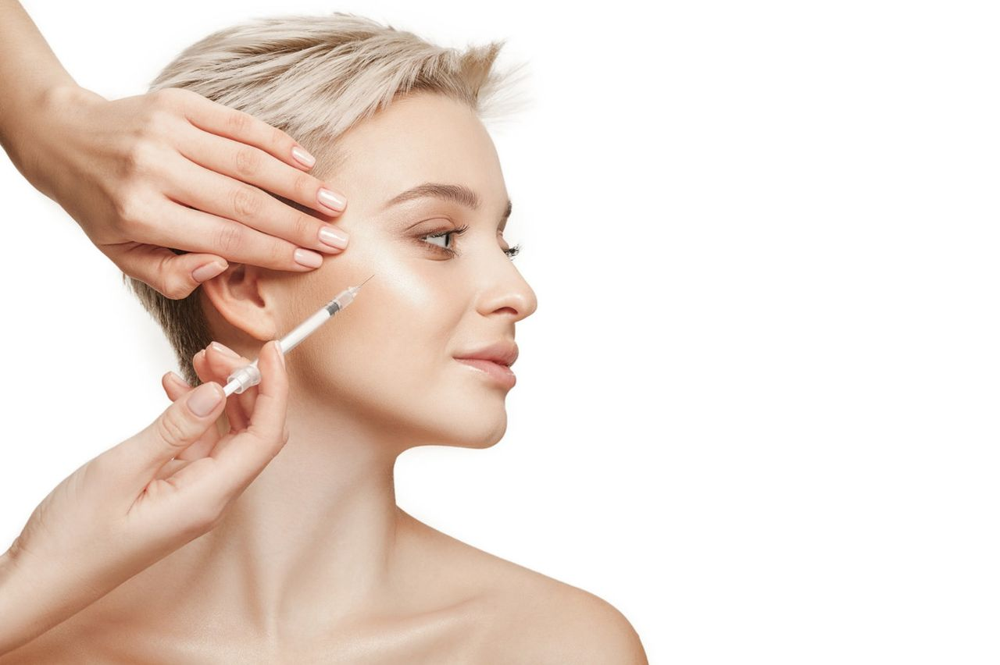

A toxina botulínica é o sonho estético de muitas pessoas, não é mesmo? Afinal, para tratar ou prevenir rugas, além de promover um aspecto de rejuvenescimento facial, a substância é a mais procurada. Ela tem o poder de realizar a inibição da contração muscular e deixar a pele com o aspecto bastante natural.
Segundo relatório global da Mordor Intelligence, o mercado da toxina botulínica deve atingir mais de US$ 7,8 bi até 2026. Mas, você sabia que ela pode ser utilizada para outras finalidades além da estética?
A substância, que é produzida pela bactéria Clostridium botulinum, tem uma história bastante interessante, afinal, seus primeiros usos foram com finalidade terapêutica.
Nos anos 1970, o oftalmologista norte-americano Alan Scott, que é considerado o “pai do botox”, fez a transformação da toxina em um medicamento para tratar deficiências oculares graves.
No decorrer dos estudos, ele fez a observação de que a substância promovia a paralisia temporária de músculos faciais, suavizando linhas de expressão que ficavam ao redor deles.
O poder da toxina botulínica despertou o interesse de milhares de pessoas na época, e segue chamando atenção de quem quer deixar o rosto com um aspecto jovem.
Mas, você sabia que a toxina pode ser utilizada para outras finalidades além da estética? Veja algumas delas:
●Enxaqueca
Se você sofre com enxaqueca, essa pode ser sua chance de se tratar. A doença é caracterizada por dor de cabeça intensa, em um ou nos dois lados dela. Outros sintomas comuns são sensibilidade a luzes, cheiros, sons, além de náuseas, vômitos e tonturas.
Nessa circunstância, a toxina botulínica serve apenas em casos crônicos da doença. Dessa forma, a aplicação não funciona em casos preventivos de enxaqueca episódica, que é aquela que acontece com frequência menor do que 15 dias por mês.
●Hiperidrose
Essa condição acontece quando as glândulas sudoríparas produzem mais suor do que o normal. Para esses casos, a aplicação da toxina botulínica em consultório é uma das soluções.
O bloqueio dura de seis a oito meses, podendo chegar, em alguns casos, a até um ano.
●Bruxismo
Quem tem bruxismo sabe como o transtorno pode afetar o dia a dia. A condição é quando uma pessoa aperta, desliza ou bate os dentes, principalmente enquanto dorme, de forma involuntária. A situação pode causar dores de cabeça, além de desgaste dos dentes e doenças na gengiva.
Nesse caso, a toxina pode ser aplicada no massater, que é o músculo da mastigação, ou no músculo temporal, localizado na lateral da cabeça. O efeito dura de quatro a seis meses.
Seja a finalidade que for, a toxina botulínica é uma das grandes substâncias que existem no mercado da estética. Gostou das dicas? Entre em contato conosco e saiba mais!